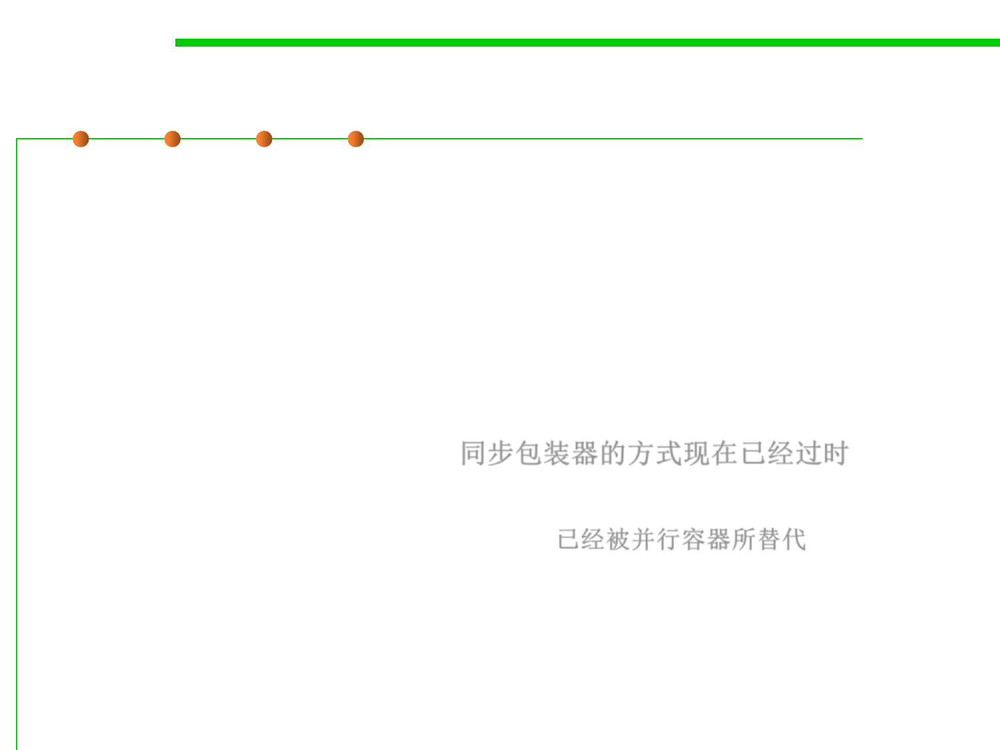

Synchronization Wrappers
5.2 Construction for Reuse
▪ Not thread-safe!
▪ Synchronization Wrappers: a new approach to thread safety
– Anonymous implementations, one per core interface
– Static factories take collection of appropriate type
– Thread-safety assured if all access through wrapper
– Must manually synchronize iteration
▪ It was new then; it’s old now! 同步包装器的方式现在已经过时
– Synch wrappers are largely obsolete
– Made obsolete by concurrent collections 已经被并行容器所替代
▪ To be discussed in Chapter 10